01Dasar Sequence-to-Sequence
Tugas sequence-to-sequence (seq2seq) adalah tugas yang mengubah satu barisan token menjadi barisan token lain. Contoh paling umum adalah penerjemahan mesin (machine translation) dari satu bahasa alami ke bahasa alami lain. Namun gagasannya jauh lebih luas: kita bisa "menerjemahkan" antarbahasa pemrograman, mengubah pertanyaan menjadi jawaban, atau memetakan barisan token apa pun ke barisan token lain. Sepanjang tulisan ini, istilah penerjemahan dipakai dalam arti umum tersebut, yaitu pemetaan dari satu barisan ke barisan lain.
Secara formal, kita punya barisan masukan \(x_1, x_2, \dots, x_m\) dan barisan keluaran \(y_1, y_2, \dots, y_n\). Perhatikan bahwa panjang keduanya boleh berbeda. Penerjemahan dapat dipahami sebagai pencarian barisan sasaran yang paling mungkin diberikan masukannya, yaitu barisan yang memaksimalkan probabilitas bersyarat \(p(y|x)\):
Masalahnya, kita tidak tahu \(p(y|x)\) yang sebenarnya. Karena itu kita mempelajari sebuah fungsi \(p(y|x, \theta)\) dengan sekumpulan parameter \(\theta\), lalu mencari keluaran terbaik menurut model yang sudah dilatih:
Untuk mendefinisikan sebuah sistem penerjemahan, ada tiga pertanyaan yang harus dijawab:
- Pemodelan (modeling): seperti apa bentuk model untuk \(p(y|x, \theta)\)?
- Pembelajaran (learning): bagaimana menemukan parameter \(\theta\)?
- Inferensi (inference): bagaimana menemukan \(y\) yang terbaik?
02Kerangka Encoder-Decoder
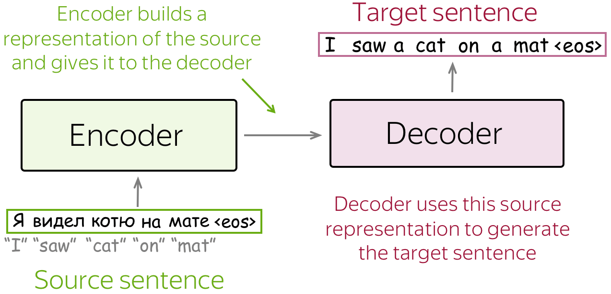
Kerangka encoder-decoder adalah paradigma pemodelan standar untuk tugas seq2seq. Kerangka ini terdiri atas dua komponen. Encoder (penyandi) membaca barisan sumber dan menghasilkan representasinya dalam bentuk vektor. Decoder (penyahsandi) memakai representasi sumber dari encoder untuk membangkitkan barisan sasaran token demi token. Hampir semua model yang dibahas di sini, sesederhana atau serumit apa pun, mengikuti struktur dua bagian ini.
03Conditional Language Model
Sebuah language model biasa menaksir probabilitas tak bersyarat \(p(y)\) dari sebuah barisan token \(y = (y_1, \dots, y_n)\). Model seq2seq harus menaksir sesuatu yang sedikit berbeda, yaitu probabilitas bersyarat \(p(y|x)\), yakni peluang barisan \(y\) diberikan sumber \(x\). Karena itu tugas seq2seq dapat dipandang sebagai conditional language model (CLM), yaitu model bahasa yang bekerja seperti biasa tetapi tambahan menerima informasi sumber \(x\).
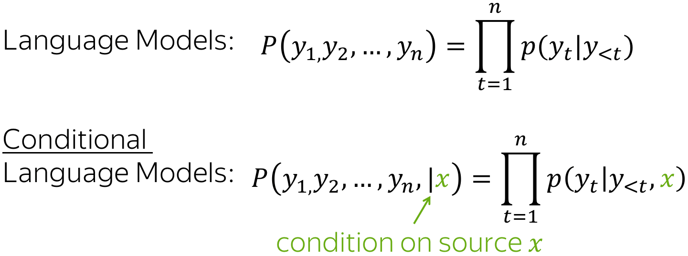
Karena satu-satunya perbedaan dengan language model biasa adalah kehadiran sumber \(x\), proses pemodelan dan pelatihannya pun mirip. Alur tingkat tingginya seperti berikut. Pertama, sumber dan token sasaran yang sudah dibangkitkan sebelumnya dimasukkan ke jaringan. Kedua, dari decoder kita memperoleh representasi vektor dari konteks, yang mencakup baik sumber maupun token sasaran sebelumnya. Ketiga, dari representasi vektor itu kita memprediksi distribusi probabilitas untuk token berikutnya.
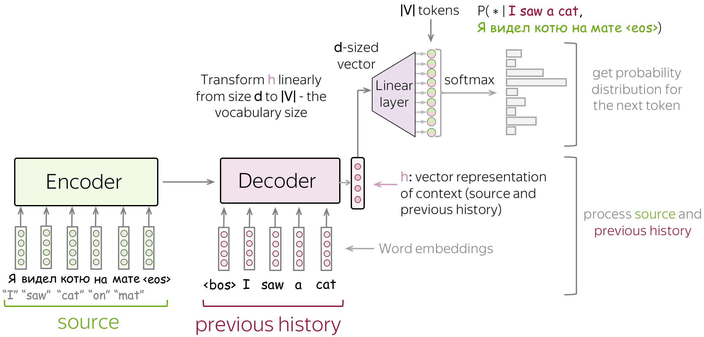
Bagian akhir ini sama seperti pada pengklasifikasi saraf dan language model. Representasi vektor sebuah teks punya dimensi \(d\), sedangkan pada akhirnya kita butuh vektor berukuran \(|V|\), yaitu probabilitas untuk \(|V|\) token (kelas) dalam kosakata. Untuk memperoleh vektor berukuran \(|V|\) dari vektor berukuran \(d\), kita memakai sebuah lapisan linear. Setelah itu, operasi softmax mengubah angka-angka mentah tersebut menjadi probabilitas token.
04Model Paling Sederhana: Dua RNN
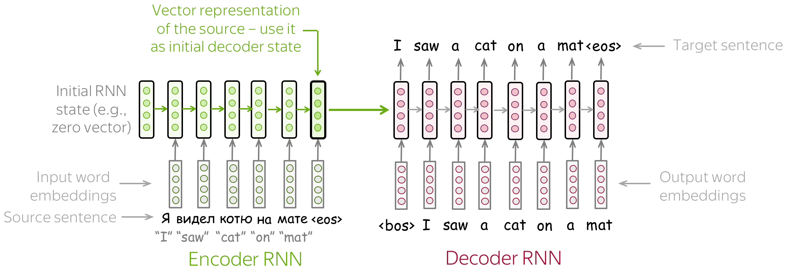
Model encoder-decoder paling sederhana terdiri atas dua RNN, biasanya berupa LSTM, satu untuk encoder dan satu untuk decoder. RNN encoder membaca kalimat sumber, lalu state akhirnya dipakai sebagai state awal RNN decoder. Di sini, hidden state adalah vektor keadaan internal yang dibawa RNN dari satu langkah waktu ke langkah berikutnya, semacam ringkasan dari semua yang sudah dibaca sejauh ini. Harapannya, state akhir encoder benar-benar "menyandikan" seluruh informasi tentang sumber, sehingga decoder dapat membangkitkan kalimat sasaran hanya berbekal vektor tunggal itu.
Model ini punya banyak variasi, misalnya encoder dan decoder yang masing-masing terdiri atas beberapa lapis. Model bertumpuk seperti ini, antara lain, dipakai pada makalah Sequence to Sequence Learning with Neural Networks, salah satu upaya awal menyelesaikan tugas seq2seq dengan jaringan saraf. Pada makalah yang sama, penulisnya memvisualisasikan state encoder terakhir dan menemukan sesuatu yang menarik: kalimat-kalimat dengan makna serupa tetapi struktur berbeda ternyata terletak berdekatan di ruang representasi.
05Pelatihan: Cross-Entropy Loss
Seperti pada language model saraf, model seq2seq dilatih untuk memprediksi distribusi probabilitas token berikutnya diberikan konteks sebelumnya, yaitu sumber dan token sasaran yang telah dibangkitkan. Secara intuitif, di setiap langkah kita memaksimalkan probabilitas yang diberikan model kepada token yang benar.
Misalkan ada satu contoh pelatihan dengan sumber \(x = (x_1, \dots, x_m)\) dan sasaran \(y = (y_1, \dots, y_n)\). Pada langkah waktu \(t\), model memprediksi distribusi probabilitas \(p^{(t)} = p(\ast \mid y_1, \dots, y_{t-1}, x_1, \dots, x_m)\). Sasaran ideal pada langkah ini adalah \(p^{\ast} = \text{one-hot}(y_t)\), artinya kita ingin model memberikan probabilitas 1 kepada token yang benar, \(y_t\), dan 0 kepada token lain.
Fungsi kerugian (loss) standarnya adalah cross-entropy loss. Untuk distribusi sasaran \(p^{\ast}\) dan distribusi prediksi \(p\), bentuknya adalah:
Karena hanya satu komponen \(p_i^{\ast}\) yang bernilai tak nol (yaitu untuk token benar \(y_t\)), penjumlahan itu mengerut menjadi:
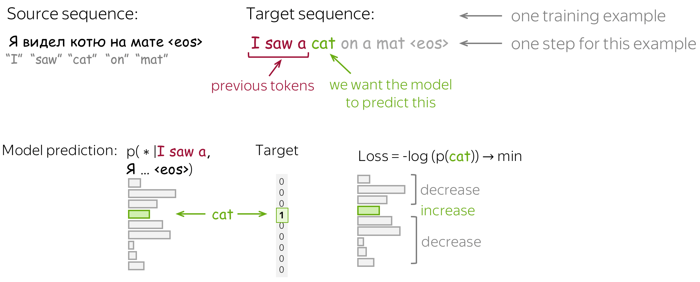
Untuk keseluruhan contoh, loss-nya adalah jumlah atas seluruh langkah waktu:
06Inferensi: Greedy dan Beam Search
Setelah memahami bentuk model dan cara melatihnya, muncul pertanyaan: bagaimana membangkitkan terjemahan dengan model itu? Kita memodelkan probabilitas sebuah kalimat sebagai hasil kali probabilitas tiap token diberikan token sebelumnya. Pertanyaan utamanya adalah bagaimana menemukan argmax-nya.
Mencari solusi pastinya tidak memungkinkan. Jumlah seluruh hipotesis yang harus diperiksa adalah \(|V|^n\), yang tidak praktis untuk kosakata dan panjang kalimat yang wajar. Karena itu kita mencari solusi hampiran (perkiraan). Menariknya, solusi pasti dalam praktik justru sering lebih buruk daripada solusi hampiran yang kita pakai.
Greedy decoding
Strategi penyahsandian paling lugas adalah greedy: di setiap langkah, bangkitkan token dengan probabilitas tertinggi. Ini bisa menjadi acuan dasar yang lumayan, tetapi punya cacat bawaan. Token terbaik pada langkah saat ini belum tentu menuntun ke barisan keseluruhan yang terbaik. Sebuah pilihan yang tampak optimal sekarang bisa menjebak model ke kelanjutan yang buruk.
Beam search
Alih-alih hanya menyimpan satu kandidat, kita simpan beberapa hipotesis sekaligus. Di setiap langkah, kita meneruskan setiap hipotesis yang ada lalu memilih \(N\) terbaik di antara semua kelanjutan. Strategi ini disebut beam search, dan jumlah hipotesis yang dipertahankan disebut beam size. Biasanya beam size berkisar 4 sampai 10. Memperbesarnya secara berlebihan tidak hanya boros komputasi, tetapi sering kali malah menurunkan kualitas terjemahan.
07Masalah Representasi Tetap
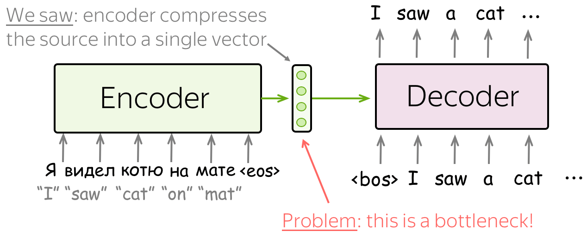
Pada model-model sebelumnya, encoder memampatkan seluruh kalimat sumber menjadi satu vektor tunggal. Ini bisa sangat berat. Banyaknya kalimat sumber yang mungkin (dan karenanya maknanya) praktis tak terhingga, sehingga memaksa semua informasi masuk ke satu vektor membuat encoder cenderung melupakan sesuatu.
Kesulitannya tidak berhenti di encoder. Decoder pun kesulitan, karena ia hanya melihat satu representasi sumber. Padahal pada tiap langkah pembangkitan, bagian sumber yang relevan bisa berbeda-beda. Dengan susunan yang lama, decoder harus menggali informasi yang berbeda-beda dari representasi tetap yang sama persis, dan itu jelas bukan pekerjaan mudah.
08Attention: Gambaran Umum
Mekanisme attention diperkenalkan pada makalah Neural Machine Translation by Jointly Learning to Align and Translate untuk mengatasi masalah representasi tetap di atas. Ide intinya sederhana: pada langkah yang berbeda, biarkan model "memusatkan perhatian" pada bagian masukan yang berbeda. Istilah attention dipertahankan dalam bahasa Inggris karena sudah baku; secara bebas ia berarti perhatian terarah, yaitu kemampuan model menimbang bagian mana dari sumber yang paling penting saat ini.
Attention adalah bagian dari jaringan saraf. Pada setiap langkah decoder, ia memutuskan bagian sumber mana yang lebih penting. Dengan begitu, encoder tidak perlu lagi memampatkan seluruh sumber menjadi satu vektor; ia cukup memberikan representasi untuk semua token sumber, misalnya seluruh state RNN dan bukan hanya yang terakhir.
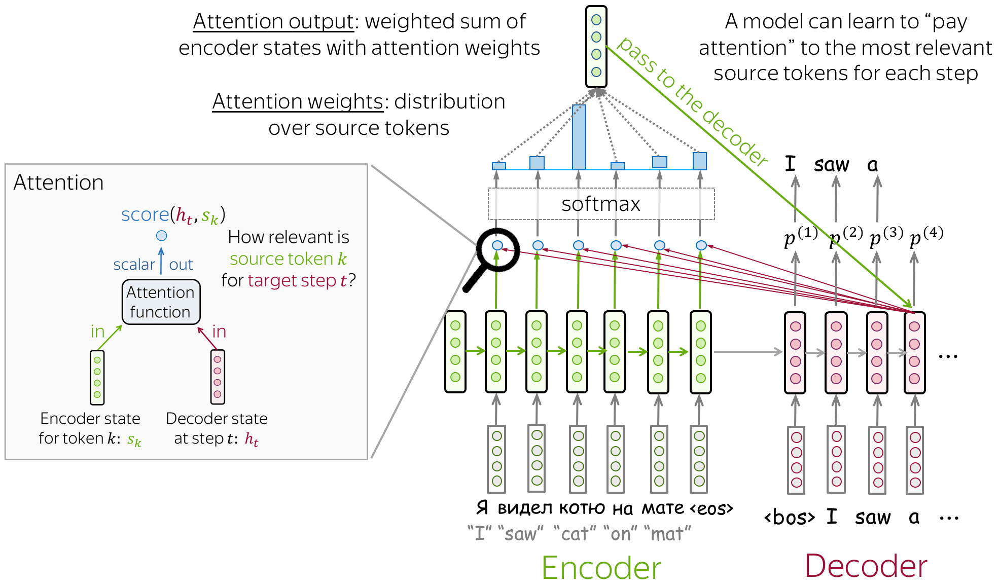
Pada setiap langkah decoder, attention melakukan rangkaian berikut. Mula-mula ia menerima masukan, yaitu satu state decoder \(h_t\) dan seluruh state encoder \(s_1, s_2, \dots, s_m\). (Warna di sini sengaja menyamai diagram aslinya: merah muda untuk sisi decoder, hijau untuk sisi encoder.) Lalu attention menghitung attention score: untuk setiap state encoder \(\color{#4f7d12}{s_k}\), sebuah fungsi mengukur "relevansi"-nya terhadap state decoder \(\color{#b01277}{h_t}\) saat ini, dan mengembalikan satu nilai skalar \(\text{score}(\color{#b01277}{h_t}\color{black}{,}\,\color{#4f7d12}{s_k}\color{black}{)}\).
Selanjutnya attention menghitung attention weights, yaitu distribusi probabilitas yang diperoleh dengan menerapkan softmax pada skor-skor tadi. Terakhir ia menghitung attention output, yaitu jumlah berbobot dari seluruh state encoder, dengan bobot berupa attention weights tersebut. Output inilah ringkasan sumber yang relevan khusus untuk langkah \(t\).
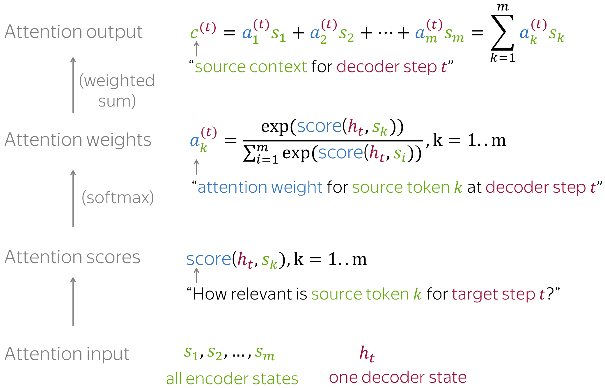
09Fungsi Attention Score
Pada skema umum tadi kita belum menetapkan bagaimana persisnya attention score dihitung. Sebenarnya kita boleh memakai fungsi apa pun, bahkan yang rumit. Namun biasanya tidak perlu, karena ada beberapa pilihan sederhana yang sudah bekerja cukup baik. Misalkan \(\color{#4f7d12}{s_k}\) adalah sebuah state encoder dan \(\color{#b01277}{h_t}\) state decoder, tiga varian paling populer adalah:
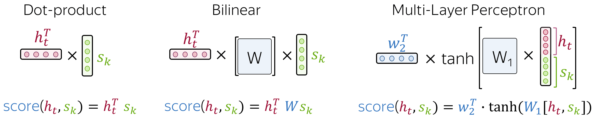
Versi dot-product adalah yang paling sederhana dan tanpa parameter tambahan. Versi bilinear menambahkan matriks bobot \(W\) di antara kedua vektor, dan inilah yang dipakai pada makalah Effective Approaches to Attention-based Neural Machine Translation sehingga kerap disebut "Luong attention". Versi multi-layer perceptron menyatukan kedua state lalu memprosesnya dengan jaringan kecil ber-nonlinearitas \(\tanh\); inilah metode pada makalah asli attention, yang lazim disebut "Bahdanau attention".
10Model Bahdanau dan Luong
Saat membahas model attention awal, dua nama yang paling sering muncul adalah Bahdanau dan Luong. Keduanya bisa merujuk pada fungsi score, tetapi juga pada keseluruhan model yang dipakai di masing-masing makalah. Mari kita lihat keduanya lebih dekat.
Model Bahdanau
Model ini berasal dari makalah Neural Machine Translation by Jointly Learning to Align and Translate oleh Dzmitry Bahdanau, KyungHyun Cho, dan Yoshua Bengio, makalah yang pertama kali memperkenalkan mekanisme attention. Ciri-cirinya:
- Encoder dwiarah (bidirectional). Untuk menyandikan tiap kata sumber dengan lebih baik, encoder memiliki dua RNN, satu maju dan satu mundur, yang membaca masukan dari arah berlawanan. Untuk setiap token, state kedua RNN tersebut digabung (concatenate). Inilah yang disebut BiRNN (bidirectional RNN). Manfaatnya, representasi setiap token memuat konteks dari kiri sekaligus dari kanan.
- Attention score: multi-layer perceptron. Skor dihitung dengan menerapkan MLP pada satu state encoder dan satu state decoder.
- Attention dipakai di antara langkah decoder. State \(h_{t-1}\) dipakai untuk menghitung attention dan outputnya \(c^{(t)}\), lalu baik \(h_{t-1}\) maupun \(c^{(t)}\) diberikan ke decoder pada langkah \(t\).
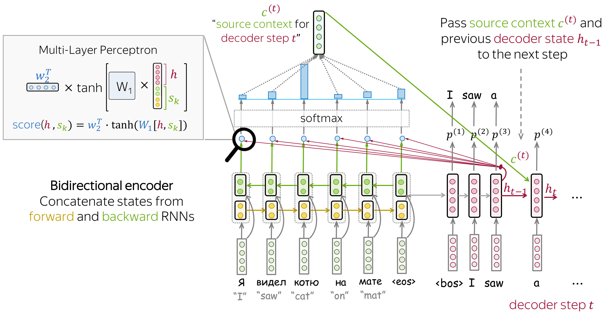
Model Luong
Makalah Luong sebenarnya membahas beberapa varian, tetapi yang biasa disebut "Luong attention" adalah varian berikut:
- Encoder searah (unidirectional), jadi lebih sederhana daripada Bahdanau.
- Attention score: fungsi bilinear.
- Attention dipakai setelah langkah decoder \(t\), sebelum prediksi. State \(h_t\) dipakai untuk menghitung attention dan outputnya \(c^{(t)}\). Lalu \(h_t\) dipadukan dengan \(c^{(t)}\) menjadi representasi baru \(\tilde{h}_t\), yang dipakai untuk membuat prediksi.
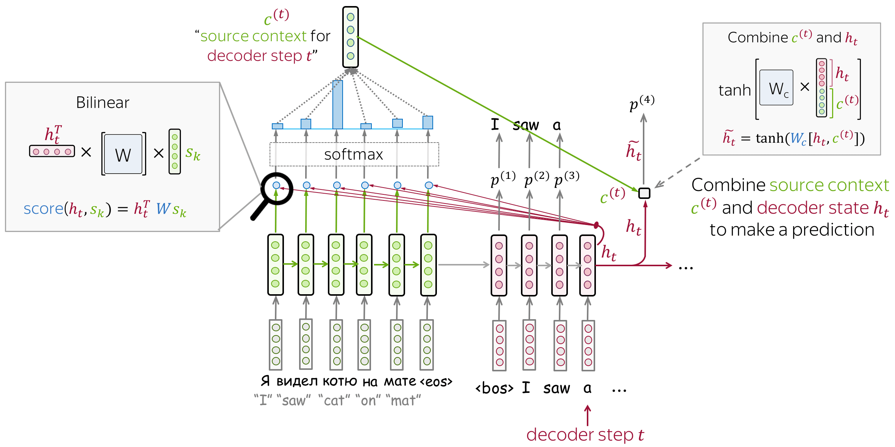
11Attention dan Alignment
Ingat kembali motivasi attention: pada langkah yang berbeda, decoder mungkin perlu fokus pada token sumber yang berbeda, yaitu token yang paling relevan saat itu. Jika kita amati attention weights, kita bisa melihat kata sumber mana yang dipakai decoder pada tiap langkah.
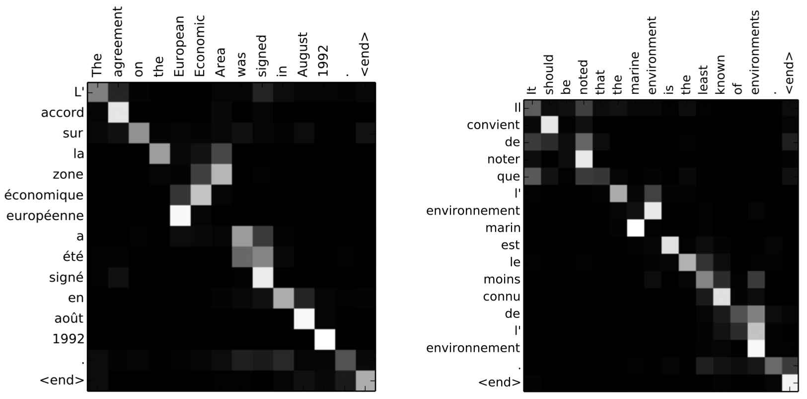
Dari contoh-contoh tersebut terlihat bahwa attention mempelajari alignment (penyelarasan) yang bersifat lunak antara kata sumber dan kata sasaran. Decoder cenderung melihat token sumber yang sedang ia terjemahkan pada langkah itu. Istilah "alignment" berasal dari penerjemahan mesin statistik, tetapi di sini pemahaman intuitifnya saja, yaitu "apa yang diterjemahkan menjadi apa", sudah cukup.
12Transformer
Transformer adalah model yang diperkenalkan pada makalah Attention is All You Need tahun 2017. Model ini bersandar sepenuhnya pada mekanisme attention, tanpa rekurensi (recurrence) maupun konvolusi. Selain menghasilkan kualitas terjemahan yang lebih tinggi, model ini juga jauh lebih cepat dilatih. Saat ini Transformer beserta variasinya sudah menjadi model standar de facto, bukan hanya untuk tugas seq2seq tetapi juga untuk language modeling dan pra-pelatihan (pretraining).

Mengapa pendekatan tanpa rekurensi ini bisa lebih cocok daripada RNN untuk memahami bahasa? Pertimbangkan kata yang bermakna ganda, misalnya kata bank dalam bahasa Inggris yang bisa berarti tepi sungai atau lembaga keuangan. Ketika menyandikan kalimat, RNN tidak akan memahami arti bank sampai ia selesai membaca seluruh kalimat, dan untuk kalimat panjang ini bisa lama. Sebaliknya, pada encoder Transformer semua token saling berinteraksi sekaligus.
Secara intuitif, encoder Transformer dapat dibayangkan sebagai serangkaian langkah penalaran (lapisan). Pada tiap langkah, token saling memandang satu sama lain (di sinilah attention diperlukan, tepatnya self-attention), bertukar informasi, dan berusaha saling memahami dalam konteks seluruh kalimat. Proses ini terjadi dalam beberapa lapis, biasanya enam. Pada tiap lapis decoder, token prefiks juga saling berinteraksi lewat self-attention, tetapi tambahan mereka juga memandang state encoder, sebab tanpa itu tidak ada terjemahan yang bisa terjadi.
13Self-Attention
Self-attention adalah salah satu komponen kunci Transformer. Perbedaannya dengan attention biasa: self-attention bekerja antarrepresentasi yang sejenis, misalnya seluruh state encoder pada suatu lapisan. Di sinilah token-token saling berinteraksi. Setiap token "memandang" token lain dalam kalimat lewat mekanisme attention, mengumpulkan konteks, lalu memperbarui representasi dirinya sendiri. Pada praktiknya, ini terjadi secara paralel untuk semua token sekaligus.
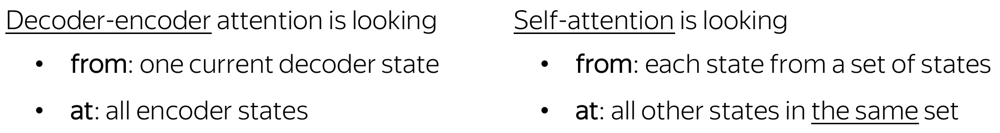
Query, key, dan value
Secara formal, intuisi tadi diwujudkan dengan attention bergaya query-key-value. Setiap token masukan menerima tiga representasi sesuai peran yang dapat ia mainkan. Query (kueri, "permintaan") dipakai saat sebuah token memandang token lain, yaitu mencari informasi untuk memahami dirinya lebih baik. Key (kunci) menanggapi permintaan query dan dipakai untuk menghitung attention weights. Value (nilai) dipakai untuk menghitung attention output, yaitu memberikan informasi kepada token yang "berkata" membutuhkannya, yakni token yang memberi bobot besar padanya.
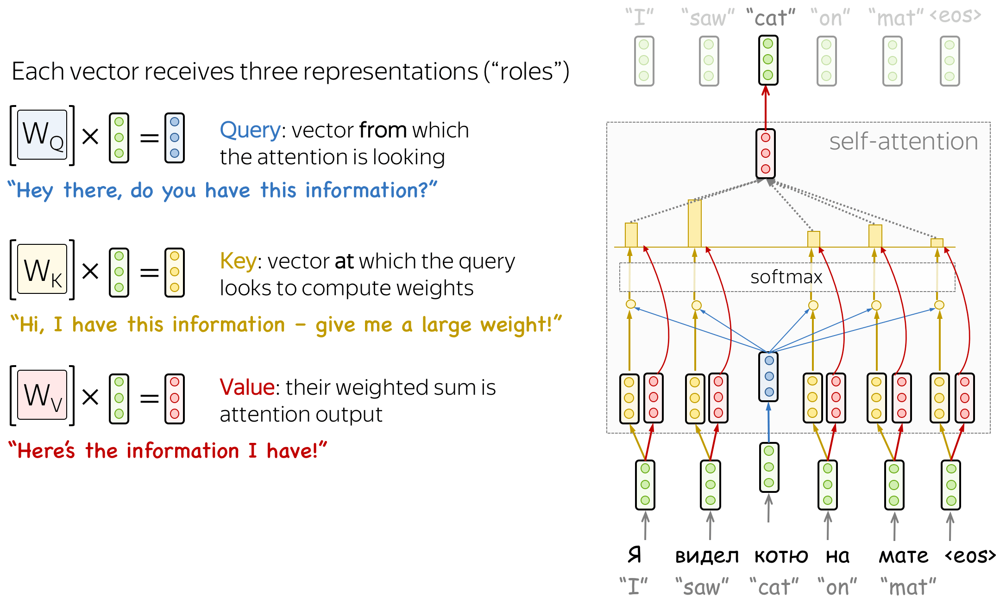
Pada Transformer, attention output dihitung dengan rumus scaled dot-product attention, yaitu hasil kali titik antara query dan key yang diskalakan oleh \(\sqrt{d_k}\), dilewatkan softmax, lalu dipakai membobot value:
dengan \(Q\), \(K\), \(V\) berturut-turut adalah matriks query, key, dan value, sedangkan \(d_k\) adalah dimensi vektor key. Pembagian dengan \(\sqrt{d_k}\) menjaga agar nilai hasil kali titik tidak membesar berlebihan sehingga softmax tetap stabil.
14Masked Self-Attention
Di dalam decoder juga ada self-attention, dan inilah yang menjalankan fungsi "memandang token-token sebelumnya". Namun ada perbedaan penting dengan self-attention di encoder. Encoder menerima semua token sekaligus, sehingga tiap token boleh memandang seluruh token dalam kalimat masukan. Sebaliknya, decoder membangkitkan satu token pada satu waktu; ketika membangkitkan, kita belum tahu token apa yang akan muncul di masa depan.
Agar decoder tidak boleh "mengintip ke depan", model memakai masked self-attention, yaitu token-token masa depan ditutup (di-mask). Lalu muncul pertanyaan: bukankah saat pelatihan kita memberikan seluruh kalimat sasaran ke decoder, jadi bagaimana mencegahnya mengintip? Memang benar, saat pelatihan kita memakai terjemahan rujukan yang sudah diketahui dan memasukkannya seluruhnya ke decoder. Tanpa mask, token akan "melihat masa depan", dan itu yang tidak kita inginkan, sehingga mask diperlukan.
Cara ini ditempuh demi efisiensi komputasi. Karena Transformer tidak punya rekurensi, semua token dapat diproses sekaligus. Inilah salah satu alasan ia begitu populer untuk penerjemahan mesin: jauh lebih cepat dilatih daripada model rekuren yang dulu mendominasi. Pada model rekuren, satu langkah pelatihan membutuhkan \(O(\text{len(source)} + \text{len(target)})\) langkah berurutan, sedangkan pada Transformer kompleksitasnya \(O(1)\), yaitu konstan.
15Multi-Head Attention
Memahami peran sebuah kata dalam kalimat sering menuntut pemahaman tentang bagaimana kata itu berhubungan dengan berbagai bagian kalimat sekaligus. Pada banyak bahasa, subjek menentukan infleksi verba, verba menentukan kasus objeknya, dan seterusnya. Singkatnya, setiap kata adalah bagian dari banyak relasi sekaligus.
Karena itu kita perlu membiarkan model fokus pada beberapa hal sekaligus. Inilah motivasi multi-head attention. Alih-alih satu mekanisme attention tunggal, multi-head attention punya beberapa "kepala" (head) yang bekerja secara mandiri, masing-masing bisa memperhatikan pola relasi yang berbeda.
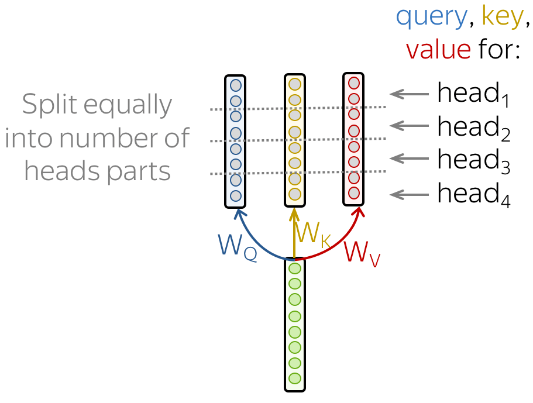
Secara formal, ini diwujudkan sebagai beberapa mekanisme attention yang hasilnya digabung:
Pada implementasinya, query, key, dan value yang dihitung untuk attention satu kepala cukup dibagi menjadi beberapa bagian. Dengan cara ini, model dengan satu head atau beberapa head memiliki ukuran yang sama, sehingga multi-head attention tidak menambah ukuran model.
16Arsitektur Transformer
Setelah memahami komponen utama dan gagasan umumnya, mari lihat keseluruhan model. Secara intuitif, model melakukan persis yang sudah dibahas: di encoder, token saling berkomunikasi dan memperbarui representasinya; di decoder, sebuah token sasaran mula-mula memandang token sasaran yang sudah dibangkitkan sebelumnya, lalu memandang sumber, dan akhirnya memperbarui representasinya. Semua ini terjadi dalam beberapa lapis, biasanya enam.

Selain attention, ada beberapa komponen lain yang perlu dipahami.
Feed-forward block
Setiap lapis memiliki blok jaringan feed-forward, yaitu dua lapisan linear dengan nonlinearitas ReLU di antaranya:
Setelah memandang token lain lewat attention, model memakai blok FFN untuk mengolah informasi baru tersebut. Perumpamaan yang enak: attention adalah "memandang token lain dan mengumpulkan informasi", sedangkan FFN adalah "berhenti sejenak untuk memikirkan dan mengolah informasi itu".
Residual connection
Residual connection (sambungan sisa) sangat sederhana, yaitu menambahkan masukan sebuah blok ke keluarannya. Meski sederhana, ia sangat berguna karena memperlancar aliran gradien melalui jaringan dan memungkinkan kita menumpuk banyak lapisan. Pada Transformer, residual connection dipakai setelah setiap blok attention dan setiap blok FFN. Pada diagram, bagian "Add" dalam lapisan "Add & Norm" merujuk pada sambungan sisa ini.
Layer normalization
Bagian "Norm" dalam "Add & Norm" merujuk pada layer normalization. Operasi ini menormalkan representasi vektor setiap contoh secara mandiri, untuk mengendalikan "aliran" menuju lapisan berikutnya. Layer normalization memperbaiki kestabilan konvergensi dan kadang bahkan kualitas. Pada Transformer, normalisasi dilakukan pada representasi vektor tiap token. Selain itu, layer normalization di sini punya parameter terlatih, yaitu \(scale\) dan \(bias\), yang dipakai setelah normalisasi untuk menskala ulang keluaran lapisan. Perlu dicatat, rerata \(\mu_k\) dan simpangan baku \(\sigma_k\) dihitung untuk tiap contoh, sedangkan \(scale\) dan \(bias\) sama untuk semua karena keduanya adalah parameter lapisan.
Positional encoding
Karena Transformer tidak mengandung rekurensi maupun konvolusi, ia tidak mengetahui urutan token masukan. Karena itu kita harus memberi tahu posisi token secara eksplisit. Untuk ini ada dua himpunan embedding: untuk token (seperti biasa) dan untuk posisi (yang baru, khusus model ini). Representasi masukan sebuah token adalah jumlah dari kedua embedding tersebut, yaitu embedding token ditambah embedding posisi.
Embedding posisi bisa dipelajari, tetapi penulis Transformer menemukan bahwa memakai embedding posisi tetap (fixed) tidak menurunkan kualitas. Positional encoding tetap yang dipakai pada Transformer adalah:
dengan \(pos\) adalah posisi dan \(i\) adalah indeks dimensi vektor. Tiap dimensi positional encoding berkaitan dengan satu gelombang sinus, dan panjang gelombangnya membentuk deret geometri dari \(2\pi\) hingga \(10000 \cdot 2\pi\).